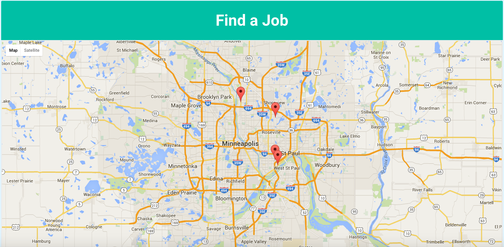

<div ng-include="'/views/templates/landingNav.html'"></div>

<div class="home-carousel">
    <div layout="column" layout-align="center center" >
        <jk-carousel data="arrayData" item-template-url="'/views/item-template.html'"  max-width="2000" max-height="800" auto-slide="true" auto-slide-time="5000">
        </jk-carousel>
    </div>
</div>

<div class="landingPageMapImage">

  
</div>
